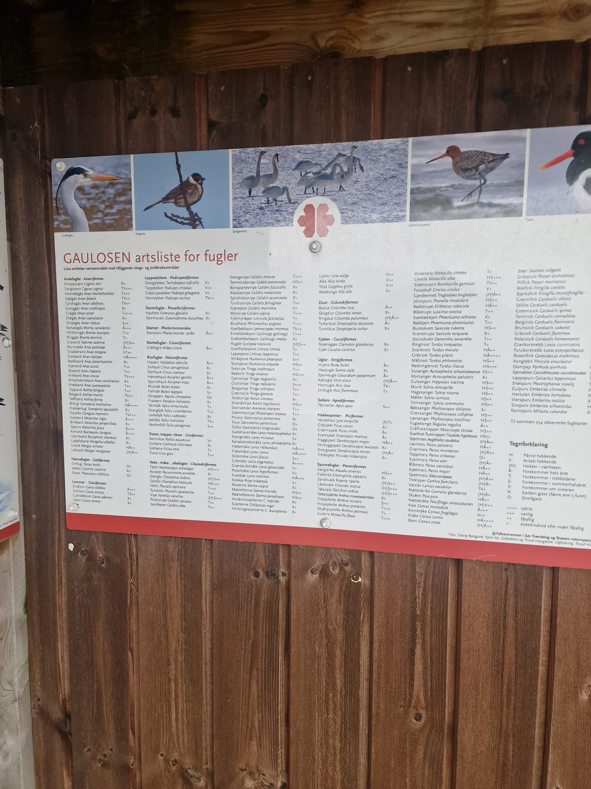
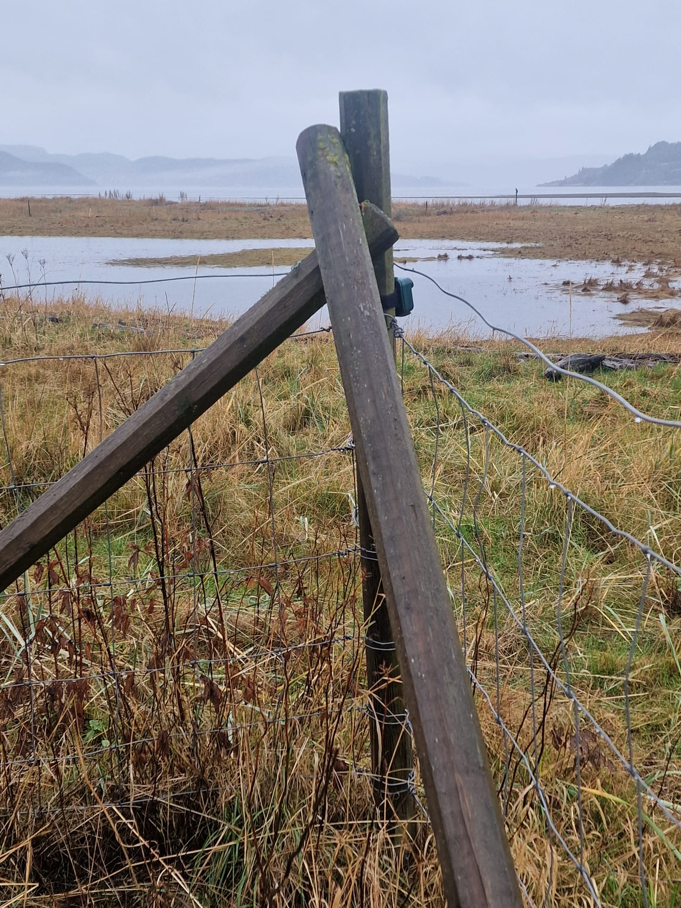
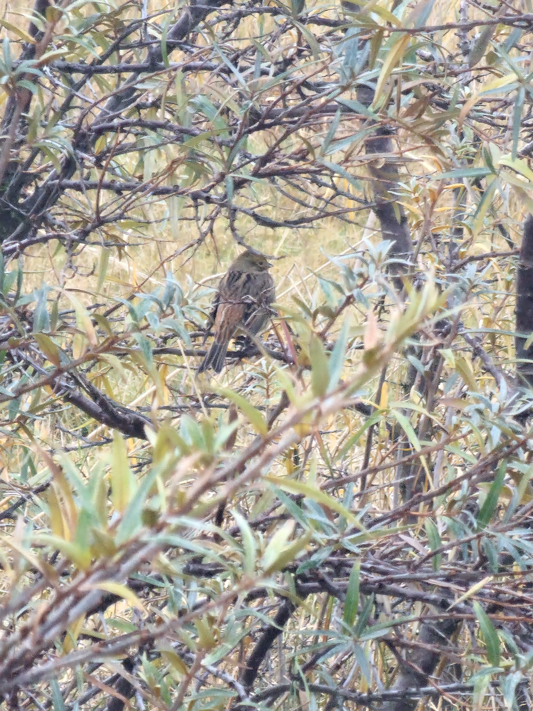
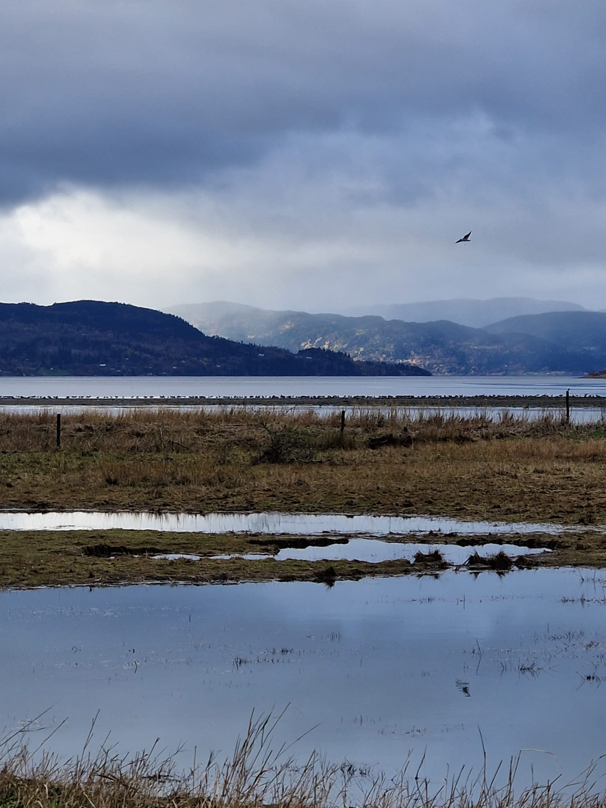
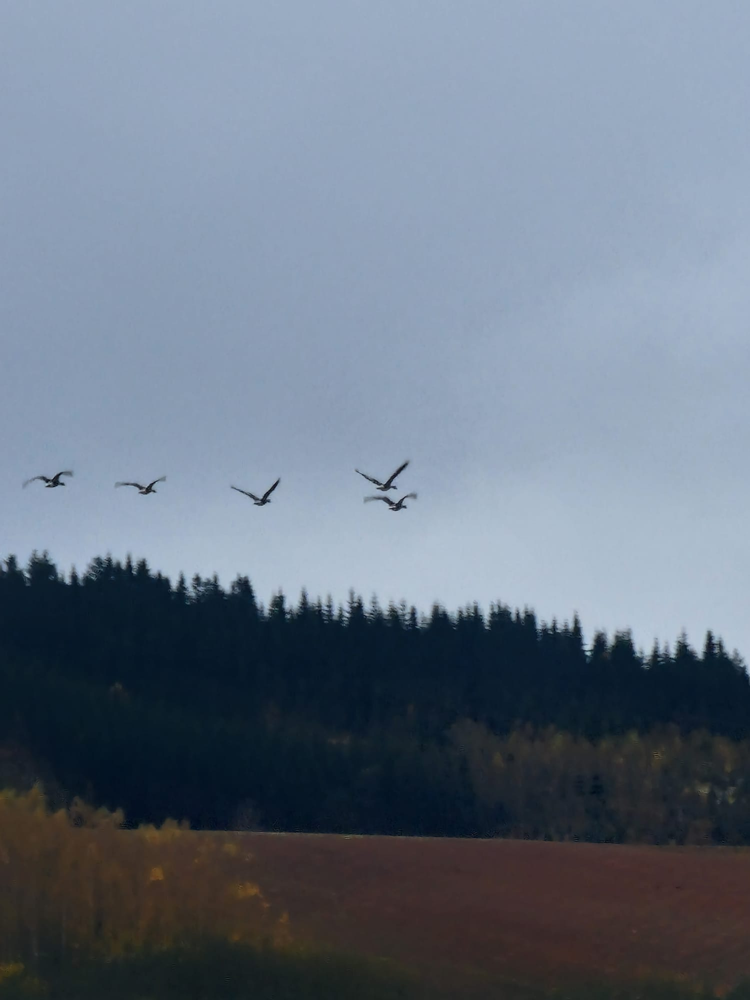

Deployed passive acoustic monitoring equipment at Gaulossen Nature Reserve during autumn migration period to assess avian biodiversity using automated deep learning classification. Despite challenging weather conditions (80%+ rain/fog coverage throughout deployment), successfully recorded 48.8 hours of continuous acoustic data, yielding 77 verified bird species from 4,023 detections. Deployment confirms Gaulossen's importance as wetland stopover habitat along East Atlantic Flyway.
Observer: George Redpath
Affiliation: Norwegian University of Science and Technology (NTNU), Department of Acoustics
Gaulossen Nature Reserve wetland area - shallow marshes, reedbeds, and open water with mountain backdrop. Deployment site selected for unobstructed acoustic sight lines.

Gaulossen artsliste for fugler (bird species list) at reserve entrance, documenting over 200 historically recorded species.
Key Observations - Afternoon (11:37-17:30)
Time
Species
Activity
Visual Count
Behavior Notes
12:30
Graylag Goose
Flock calling
~200
High vocal activity
14:00
Hooded Crow
Perching/calling
3-5
Near goose flock
16:00
Graylag Goose
PEAK EVENT
200+
91-min continuous calling
Peak Flock Event (16:00-17:26)
Graylag Goose (Anser anser): Most intensive vocal activity occurred during 91-minute flock event. Visual observation estimated 200+ individuals with continuous calling. Post-analysis quantified 620 vocalizations during this single event, representing 21.6% of all Graylag detections in 1.9% of recording time (extreme concentration).
Corvid Activity: Hooded Crow and Carrion Crow (5-10 individuals) frequently calling in proximity to goose flocks, consistent with sentinel mutualism behavior pattern.

AudioMoth deployment location at wetland edge. Equipment mounted on fence post structure approximately 1.5m above ground.
Evening Crepuscular Activity (19:00-22:00)
Great Snipe (Gallinago media): Dusk period yielded peak detection (82 calls at 20:00), confirming autumn migration stopover use of wetland. These are contact/foraging calls, NOT spring lek displays (which occur April-May). No visual confirmation obtained due to cryptic species behavior and poor visibility.
Day 2: October 14, 2025
Morning Observations (06:00-12:00)
Time
Temp (°C)
Conditions
Wind
Visibility
Notes
06:00
8
Heavy fog
Calm
<200m
Pre-dawn period
08:00
9
Fog, rain
Light
~500m
Dawn chorus peak
10:00
10
Rain, fog clearing
Light NW
~1km
Improved visibility
12:00
11
Overcast, light rain
Moderate
~1.5km
Midday conditions
Dawn Chorus (06:00-09:00)
Time
Species
Activity
Audible Calls
Notes
07:00
Eurasian Woodcock
Roding flights
Frequent
Distinctive calls
08:00
Grasshopper-Warbler
DAWN PEAK
Intense
Continuous reeling
08:00
Waterfowl
Foraging
Moderate
Flock activity
Dawn Chorus Highlights
Common Grasshopper-Warbler (Locustella naevia): Intense reeling trill at 08:00 (51 calls in single hour - 86% of total daily detections, 98% of calls at dawn). Classic dawn chorus territorial singing. Mechanical, insect-like continuous trill.
Eurasian Woodcock (Scolopax rusticola): Roding flight displays 07:00-08:00 peak (31 calls detected at 08:00). Crepuscular specialist (75% of detections at dawn/dusk periods).

Cryptically-colored bird species observed in wetland vegetation during deployment. Excellent example of natural camouflage adaptation in wetland habitat.

Waterfowl congregation on Gaulossen wetland during deployment. Overcast conditions and dramatic sky typical of recording period. Large flock visible on water surface.
Day 3: October 15, 2025 - Equipment Recovery
Pre-Dawn Nocturnal Migration (02:00-05:00)
Nocturnal flight calls documenting active East Atlantic Flyway passage:
AudioMoth v1.2 performed excellently throughout 48.8-hour deployment despite continuous rain exposure. All 48.8 hours of audio data (35.2 GB) successfully captured with zero file corruption. Performance exceeded expectations for adverse weather deployment.

Extensive goose flock formations observed during deployment. Visual documentation corresponding to acoustic data showing 2,871 Graylag Goose detections (69.9% of total vocalizations). Multiple flock groups visible in formation.
Post-Deployment Analysis Summary
Automated Classification (BirdNET v2.4)
Initial detections: 90 species, 6,805 total detections
After human verification: 82 species, 4,108 detections (91.1% species pass rate)
After biological screening:74 species, 4,023 detections (82.2% final pass rate)
Key Behavioral Findings
1. Social Behavior Dominance
86% of detections from flock/social species
Graylag Goose: 98.7% of calls in flocks (59 discrete flock events)
Largest flock: 620 calls over 91 minutes
2. Corvid-Waterfowl Sentinel Mutualism
8,778 geese-crow co-occurrences within 10-minute windows
Pattern consistent with heterospecific eavesdropping
Crows providing early warning, geese benefiting from predator detection
3. Migration Documentation
37 migratory species detected (45% of verified species)
47 nocturnal flight calls documenting active flyway passage
Great Snipe: 189 detections representing autumn stopover
4. Temporal Specialization
Common Grasshopper-Warbler: 98% dawn activity
Great Snipe: 61% crepuscular (69% dusk-only)
Mallard: 59% nocturnal (biologically valid for ducks)
Conservation Implications
Gaulossen as Critical Stopover Habitat
Species Diversity: 74 verified species in 48.8 hours demonstrates high biodiversity
Declining Species Present: Great Snipe, Corn Crake, River Warbler (rare vagrant)
Flyway Importance: Nocturnal migration calls confirm active East Atlantic Flyway corridor
Habitat Quality: High social species concentration indicates productive foraging habitat
Passive Acoustic Monitoring Value
Weather-independent data collection (visual surveys impossible during fog/rain)
24-hour coverage capturing nocturnal/crepuscular species
Permanent acoustic archive for future reference
Non-invasive methodology suitable for sensitive species